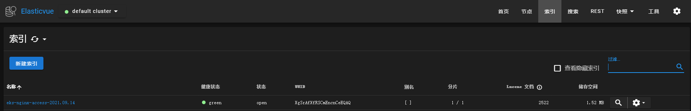
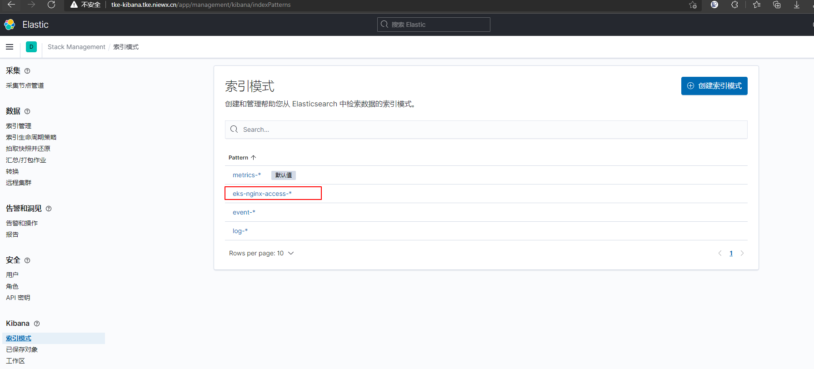

弹性集群是无需购买节点就可以部署服务的k8s服务，是现在服务部署在k8s的主流方案，相比于传统的k8s集群，弹性集群隔离性更好，成本更低，但是也存在一些限制，不能部署DaemonSet、不能使用nodeport等。
下面我们实践下在腾讯云的eks上部署nginx-ingress并采集nginx-ingress controller访问日志到es，最终通过kibana来查询。其实腾讯云也提供了日志采集服务cls，也可以用云上提供的方案。如果你想节约成本，并且习惯了es查日志，可以用文章中的方案。
部署nginx-ingress
部署nginx-ingress，我们可以通过helm直接部署，腾讯云的应用市场也有helm包可以一键部署，这里我们用helm一键部署到我们的eks集群中
这里部署的nginx-ingress没有configmap，手动创建一个configmap来全局配置nginx-ingress，将访问日志写到日志文件，日志格式为json格式，后续如果需要新增ingress全局配置也可以在这个configmap进行修改。
1
2
3
4
5
6
7
8
9
10
11
12
13
14
| apiVersion: v1
data:
access-log-path: /var/log/nginx/nginx_access.log
error-log-path: /var/log/nginx/nginx_error.log
log-format-upstream: '{"time": "$time_iso8601", "remote_addr": "$proxy_protocol_addr",
"x-forward-for": "$proxy_add_x_forwarded_for", "request_id": "$req_id", "remote_user":
"$remote_user", "bytes_sent": $bytes_sent, "request_time": $request_time, "status":$status,
"vhost": "$host", "request_proto": "$server_protocol", "path": "$uri", "request_query":
"$args", "request_length": $request_length, "duration": $request_time,"method":
"$request_method", "http_referrer": "$http_referer", "http_user_agent": "$http_user_agent"}'
kind: ConfigMap
metadata:
name: eks-nginx-ingress-controller
namespace: nginx-ingress
|
修改了configmap后重建nginx-ingress controller的pod即可。nginx-ingress的具体使用可以参考文档https://cloud.tencent.com/developer/article/1768089
采用filebeat作为sidecar采集日志到es
通常的日志是在集群通过DaemonSet部署采集agent，然后采集节点的容器日志目录，由于eks集群不支持DaemonSet的部署，所以我们这里通过sidecar的方式来采集pod里面的日志。
部署elasticsearch集群
es集群的部署，这里就不详细说明了，可以通过helm快速部署，也可以参考文档https://www.niewx.cn/2021/06/12/use-operator-to-quickly-deploy-es-cluster-in-k8s/通过eck部署带有鉴权的es集群
配置filebeat采集configmap
1
2
3
4
5
6
7
8
9
10
11
12
13
14
15
16
17
18
19
20
21
22
23
24
25
26
27
28
29
| apiVersion: v1
data:
filebeat.yml: |-
filebeat.inputs:
- type: log
paths:
- /var/log/nginx/nginx_access.log
# tags: ["access"]
fields:
app: eks-nginx-ingress
type: nginx-access
fields_under_root: true
json.keys_under_root: true
json.overwrite_keys: true
json.add_error_key: true
setup.ilm.enabled: false
setup.template.name: "eks-nginx-access"
setup.template.pattern: "eks-nginx-access-*"
output.elasticsearch:
hosts: ['10.0.0.185:9200']
username: elastic
password: 13Ixxxxxd0S1mr70sulW8
index: "eks-nginx-access-%{+yyyy.MM.dd}"
kind: ConfigMap
metadata:
name: filebeat-nginx-config
namespace: nginx-ingress
|
filebeat的配置说明如下
- json.keys_under_root：keys_under_root可以让字段位于根节点
- json.overwrite_keys：对于同名的key，覆盖原有key值
- json.add_error_key：将解析错误的消息记录储存在error.message字段中
- hosts：es的访问地址
- index：日志写入es的索引名称
- username：es登录用户名
- password：es的登录密码
部署sidecar
1
2
3
4
5
6
7
8
9
10
11
12
13
14
15
16
17
18
19
20
21
22
23
24
25
26
27
28
29
30
31
32
33
34
35
36
37
38
39
40
41
42
43
44
45
46
47
48
49
50
51
52
53
54
55
56
57
58
59
60
61
62
63
64
65
66
67
68
69
70
71
72
73
74
75
76
77
78
79
80
81
82
83
84
85
86
87
88
89
90
91
92
93
94
95
96
97
98
99
100
101
102
103
104
105
106
107
108
109
110
111
112
113
114
115
116
117
118
119
120
121
122
123
124
125
126
127
128
129
130
| apiVersion: apps/v1beta2
kind: Deployment
metadata:
labels:
app: eks-nginx-ingress
app.kubernetes.io/component: controller
chart: eks-nginx-ingress-1.36.3
heritage: Helm
release: eks-nginx-ingress
name: eks-nginx-ingress-controller
namespace: nginx-ingress
spec:
progressDeadlineSeconds: 600
replicas: 1
revisionHistoryLimit: 10
selector:
matchLabels:
app: eks-nginx-ingress
release: eks-nginx-ingress
strategy:
rollingUpdate:
maxSurge: 25%
maxUnavailable: 25%
type: RollingUpdate
template:
metadata:
annotations:
eks.tke.cloud.tencent.com/cpu-type: none
labels:
app: eks-nginx-ingress
app.kubernetes.io/component: controller
component: controller
qcloud-redeploy-timestamp: "1631609992665"
release: eks-nginx-ingress
spec:
containers:
- args:
- /nginx-ingress-controller
- --default-backend-service=nginx-ingress/eks-nginx-ingress-default-backend
- --election-id=ingress-controller-leader
- --ingress-class=nginx
- --configmap=nginx-ingress/eks-nginx-ingress-controller
env:
- name: POD_NAME
valueFrom:
fieldRef:
apiVersion: v1
fieldPath: metadata.name
- name: POD_NAMESPACE
valueFrom:
fieldRef:
apiVersion: v1
fieldPath: metadata.namespace
image: ccr.ccs.tencentyun.com/tke-market/nginx-ingress-controller:0.30.0
imagePullPolicy: IfNotPresent
livenessProbe:
failureThreshold: 3
httpGet:
path: /healthz
port: 10254
scheme: HTTP
initialDelaySeconds: 10
periodSeconds: 10
successThreshold: 1
timeoutSeconds: 1
name: eks-nginx-ingress-controller
ports:
- containerPort: 80
name: http
protocol: TCP
- containerPort: 443
name: https
protocol: TCP
readinessProbe:
failureThreshold: 3
httpGet:
path: /healthz
port: 10254
scheme: HTTP
initialDelaySeconds: 10
periodSeconds: 10
successThreshold: 1
timeoutSeconds: 1
resources: {}
securityContext:
runAsUser: 0
terminationMessagePath: /dev/termination-log
terminationMessagePolicy: File
volumeMounts:
- mountPath: /var/log/nginx
name: nginx-log
- args:
- -c
- /etc/filebeat.yml
- -e
- -strict.perms=false
image: elastic/filebeat:7.14.1
imagePullPolicy: IfNotPresent
name: filebeat
resources:
limits:
cpu: 500m
memory: 1Gi
requests:
cpu: 250m
memory: 256Mi
securityContext:
privileged: false
terminationMessagePath: /dev/termination-log
terminationMessagePolicy: File
volumeMounts:
- mountPath: /var/log/nginx
name: nginx-log
- mountPath: /etc/filebeat.yml
name: filebeat-config
subPath: filebeat.yml
dnsPolicy: ClusterFirst
restartPolicy: Always
schedulerName: default-scheduler
securityContext: {}
serviceAccount: eks-nginx-ingress
serviceAccountName: eks-nginx-ingress
terminationGracePeriodSeconds: 60
volumes:
- emptyDir: {}
name: nginx-log
- configMap:
defaultMode: 420
name: filebeat-nginx-config
name: filebeat-config
|
sidecar采集日志的实现其实就是将nginx-ingress的日志文件目录和filebeat的目录挂载到emptyDir，这样filebeat就可以直接读取nginx-ingress的日志文件进行采集了。
注意: filebeat启动的时候可能会报错Exiting: error loading config file: open filebeat.yml: permission denied，这里是因为读取配置文件的权限不足，可以加上-e -strict.perms=false参数解决。
验证日志是否成功采集到es
检索es，这里推荐一个可视化的插件elasticvue，具体介绍可以查看文档https://elasticvue.com/，浏览器扩展是运行elasticvue的最简单方法。可以立即使用elasticvue，而无需进行任何集群配置。这里我们通过elasticvue来检索下日志。

从es中能查看到索引，并且从索引中能查询到access的访问日志，说明日志已经成功采集到了es中。
通过kibana检索日志
为了能够更加访问的检索日志，这里部署一个kibana用来进行日志的检索和分析。
创建kibana配置文件
1
2
3
4
5
6
7
8
9
10
11
12
13
14
| apiVersion: v1
data:
kibana.yml: |-
elasticsearch.hosts: http:
server.host: "0"
server.name: kibana
elasticsearch.username: "elastic"
elasticsearch.password: "13I8Cxxx70sulW8"
server.maxPayloadBytes: "10485760"
i18n.locale: "zh-CN"
kind: ConfigMap
metadata:
name: kibana-cm
namespace: elastic-system
|
kibana的配置说明如下：
- elasticsearch.hosts：es的访问地址
- server.host：kibana的监听地址
- server.name：kibana启动名称
- elasticsearch.username：es鉴权的用户名
- elasticsearch.password：es鉴权的密码
- server.maxPayloadBytes：解决kibana出现Request Entity Too Large报错的问题
- i18n.locale：kibana界面汉化，需要6.7以上版本的kibana才支持
部署kibana
可以参考下面yaml部署kibana
1
2
3
4
5
6
7
8
9
10
11
12
13
14
15
16
17
18
19
20
21
22
23
24
25
26
27
28
29
30
31
32
33
34
35
36
37
38
39
40
41
42
43
44
45
46
47
48
49
50
51
52
53
54
55
56
57
58
59
| apiVersion: apps/v1
kind: Deployment
metadata:
labels:
k8s-app: kibana
qcloud-app: kibana
name: kibana
namespace: elastic-system
spec:
progressDeadlineSeconds: 600
replicas: 1
revisionHistoryLimit: 10
selector:
matchLabels:
k8s-app: kibana
qcloud-app: kibana
strategy:
rollingUpdate:
maxSurge: 1
maxUnavailable: 0
type: RollingUpdate
template:
metadata:
annotations:
qcloud-redeploy-timestamp: "1631608046798"
creationTimestamp: null
labels:
k8s-app: kibana
qcloud-app: kibana
spec:
containers:
- image: kibana:7.10.1
imagePullPolicy: IfNotPresent
name: kibana
resources:
limits:
cpu: 500m
memory: 1Gi
requests:
cpu: 250m
memory: 256Mi
securityContext:
privileged: false
terminationMessagePath: /dev/termination-log
terminationMessagePolicy: File
volumeMounts:
- mountPath: /usr/share/kibana/config/kibana.yml
name: vol
subPath: kibana.yml
dnsPolicy: ClusterFirst
restartPolicy: Always
schedulerName: default-scheduler
securityContext: {}
terminationGracePeriodSeconds: 30
volumes:
- configMap:
defaultMode: 420
name: kibana-cm
name: vol
|
配置ingress提供访问
1
2
3
4
5
6
7
8
9
10
11
12
13
14
15
16
17
18
| apiVersion: networking.k8s.io/v1beta1
kind: Ingress
metadata:
annotations:
kubernetes.io/ingress.class: ingress
nginx.ingress.kubernetes.io/proxy-body-size: 1000m
nginx.ingress.kubernetes.io/use-regex: "true"
name: tke-kibana-ingress
namespace: elastic-system
spec:
rules:
- host: tke-kibana.tke.niewx.cn
http:
paths:
- backend:
serviceName: kibana
servicePort: 5601
path: /
|
这里我们可以通过域名在浏览器访问到我们的kibana界面。
kibana检索日志
创建kibana的索引检索es的日志

索引创建好之后就可以在Discover中检索你的日志了

欢迎访问 Vashon 的博客，博客和文章在完善中，请大家耐心等待。 若有问题或者有好的建议欢迎留言，笔者看到之后会及时回复。